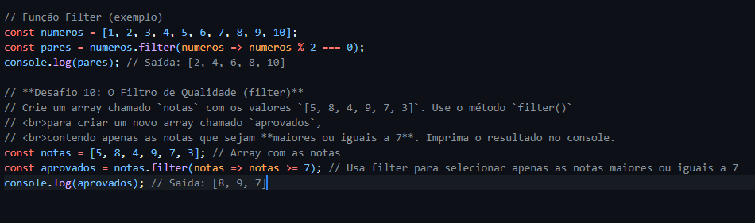

A função filter() é usada para filtrar elementos de um array com base em uma condição.
Ela retorna um novo array contendo apenas os elementos que atendem à condição especificada.
A sintaxe da função filter() é a seguinte:
array.filter(callback(element[, index[, array]])[, thisArg])
Onde:
element: O elemento atual sendo processado no array.index: O índice do elemento atual sendo processado no array.array: O array no qual o método filter() foi chamado.thisArg: O valor a ser usado como this ao executar o callback.Exemplo de uso da função filter():
